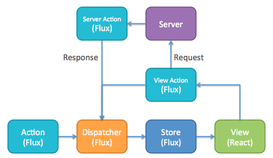

Highly responsive applications that feel like native apps is the high ambition of most web apps these days. And it comes at a cost, MV* pattern gets you going really fast and DOM updates feel nice and smooth, it is a slippery slope and hard to keep coupling to a minimum between models and views. The main trouble is that the application complexity grows fast, with the usual consequences.
If you are a fan of functional, you are probably gravitating towards data structures which are immutable and have a soft spot for pure functions. But since we still need CRUD, we still need a good pattern for flowing updates to UI.
Complement to React, Flux is a pattern rather than library, before discussing it, let’s have a super brief run down of ReactJS
Application architecture used with React is based around the unidirectional data flow. It allows you to easily keep the application logic separate from individual views reducing coupling in your application. This is using the Von Neumann model of computing, where data only flows in one direction.
So, data flows one way: from owner to child. You can think of it as "one-way data binding”.
However, there are lots of applications that require you to read some data and flow it back into your program. For example, when developing forms, you'll often want to update some React state when you receive user input. Or perhaps you want to perform layout in JavaScript and react to changes in some DOM element size.
In React, you would implement this by listening to a "change" event, read from your data source (usually the DOM) and call setState() on one of your components. "Closing the data flow loop" explicitly leads to more understandable and easier-to-maintain programs. You may need to refer to React's forms documentation for more information.

A unidirectional data flow is central to the Flux pattern, and the above diagram should be the primary mental model for the Flux programmer. The dispatcher, stores and views are independent nodes with distinct inputs and outputs. The actions are simple objects containing the new data and an identifying type property. The following diagram demonstrates how the front end would interact with the server:
View action sends information in 2 directions:
This structure allows to reason easily about application in a way that is reminiscent of functional reactive programming, or more specifically data-flow programming or flow-based programming, where data flows through the application in a single direction — there are no two-way bindings. Application state is maintained only in the stores, allowing the different parts of the application to remain highly decoupled. Where dependencies do occur between stores, they are kept in a strict hierarchy, with synchronous updates managed by the dispatcher.
Credit for images and some parts of content goes to ReactJS website.